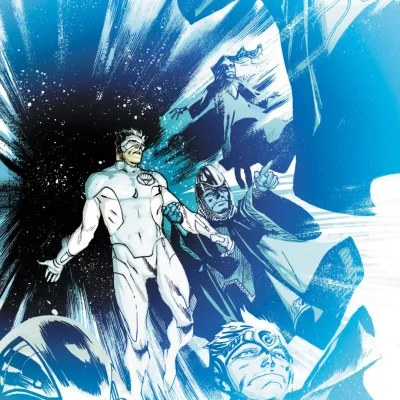

In-Universe History · 2013
The Templar Guardians Rise
With the old Guardians executed, a hidden order of Maltusians takes their place.

2013
The story
After Volthoom's death, Sinestro did what no one had ever dared: he executed the Guardians of the Universe, one by one, for the destruction of Korugar. He spared only Ganthet and Sayd — and exiled them from Oa. For the first time in ten billion years, the universe had no Guardians.
But the Guardians had kept one secret. Deep beneath Oa, in the Chamber of Shadows, a hidden order of Maltusians had guarded the imprisoned Volthoom for eons — never seen, never named, devoted entirely to their vigil. With the old Guardians dead, these hidden ones stepped into the light.
They called themselves the Templar Guardians. Unlike their predecessors, they had spent millennia in humility and service rather than pride and detachment. They appointed Hal Jordan as temporary leader of the Corps while they set out on a voyage of learning — determined not to repeat the mistakes of the Guardians who came before.
The Templar Guardians debuted in Green Lantern vol. 5 #20 (2013, Johns/Mahnke), in the aftermath of the Wrath of the First Lantern. A new order for a new era — humbler, wiser, and watching.
Key figures


Where to read
Green Lantern vol. 5 #20 (2013) — the aftermath of Wrath of the First Lantern.
Green Lantern: New Guardians (2011) #21 — cropped main-cover artwork. Rafael Albuquerque (cover art); Dave McCaig (cover colors). Artwork source & details.
Artwork credits (3 images)
Credits refer to the illustrations shown here. Open a record for sources, adaptations and unresolved details. Some artwork and source pages contain story spoilers.
- Templar Guardians — Green Lantern: New Guardians (2011) #21 — cropped main-cover artwork. Rafael Albuquerque (cover art); Dave McCaig (cover colors).
- Hal Jordan — Hal Jordan and the Green Lantern Corps #45 (2018), Tyler Kirkham variant cover, cropped detail. Tyler Kirkham (cover pencils and inks); Arif Prianto (cover colors).
- Ganthet — Ganthet (Earth-27 fan project), commission (2018). Phil Cho (illustration).